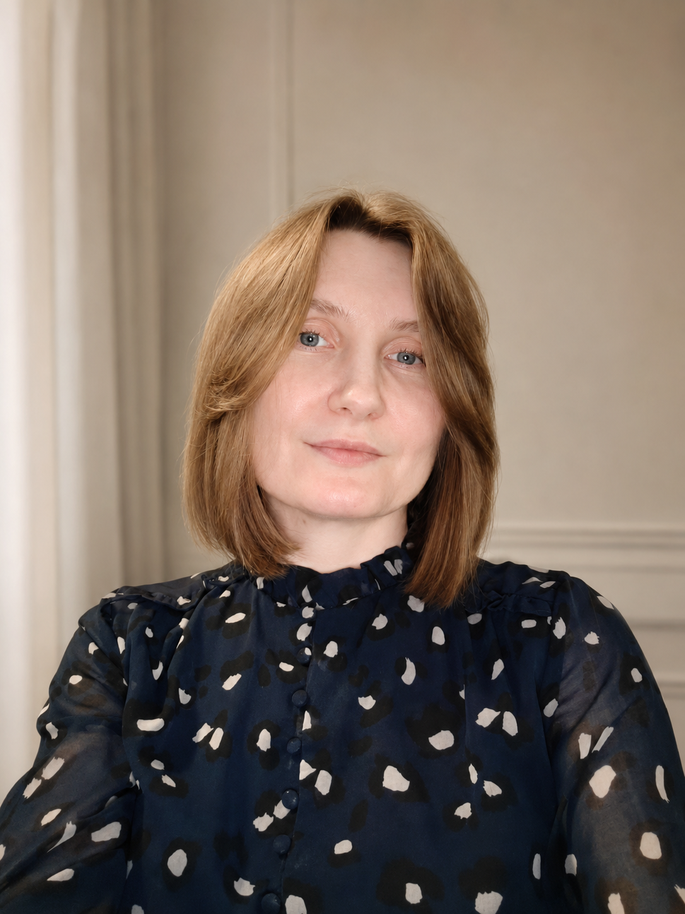

Помогаю экспертам и бизнесам разобраться, какие связки реально приводят клиентов, где теряется бюджет и что мешает рекламе окупаться.
Дешёвый лид не всегда приводит к продаже. Хороший CTR не всегда означает, что реклама работает. А заявки в Direct сами по себе ещё не показывают, зарабатывает ли проект.
В работе я ищу не “самую дешёвую заявку”, а связки, которые действительно приводят клиентов и дают понятные решения: что отключить, что усилить и куда дальше направлять бюджет.
Оцениваю, кто приходит с рекламы и есть ли у этих людей реальный интерес к покупке.
Разбираю, что происходит после заявки: отвечает ли человек, доходит ли до консультации, брони, заказа или оплаты.
Нахожу, где бюджет перестаёт работать: в оффере, креативе, воронке, переписке, доверии или аналитике.
После теста понятно, что отключить, что усилить, что проверить следующим и какие связки можно масштабировать.
Работа начинается не с рекламного кабинета. Сначала нужно понять продукт, аудиторию, путь клиента и экономику запуска.
Анализирую продукт, аудиторию, мотивы покупки, барьеры, конкурентов и текущую воронку. Никаких гипотез наугад — только данные из интервью, рекламной статистики и поведения клиентов.
Формирую позиционирование, путь клиента, офферы, гипотезы и структуру запуска. Создаю логику, которая проводит человека от первого касания до заявки, консультации или покупки.
Настраиваю рекламу, подключаю аналитику и собираю прозрачную отчётность. Смотрю, какие связки дают результат, где теряется бюджет и какие этапы воронки нужно усилить.
Инструменты подбираются под задачу, а не наоборот.
Вы работаете по рекомендациям и “сарафанному радио”, но хотите перейти к управляемой системе привлечения клиентов. Нужен фундамент, понятная упаковка и безопасный выход в платный трафик.
Бюджет тратится, заявки есть или были, но непонятно, какие связки реально приводят клиентов и где теряется результат. Требуется аудит, аналитика и пересборка смыслов.
Есть продажи и опыт запусков, но для роста нужны более глубокая аналитика, автоматизация воронки, AI-инструменты и точное позиционирование.
Не абстрактные метрики в рекламном кабинете, а конкретный бизнес-результат и управляемую инфраструктуру.
Точное понимание, кто ваша аудитория, почему она покупает и какие смыслы действительно влияют на принятие решения.
Формулировки, которые чётко отделяют вас от конкурентов и притягивают осознанных, платежеспособных клиентов.
Понятный пошаговый план запуска: что тестируем, в какой последовательности, на какую аудиторию, с каким бюджетом и по каким показателям оцениваем результат.
Системный тест гипотез, креативов, аудиторий и поиск рабочих связок в Meta Ads, которые можно анализировать, усиливать и масштабировать.
Прозрачную отчётность, твёрдые цифры, логичные выводы и понимание, куда двигаться дальше на основе CPL, CPA, ROAS, ROI и качества заявок.
Снижение потерь рекламного бюджета и системное усиление каждого этапа воронки: от первого касания до заявки, консультации, оплаты или брони.
В каждом проекте важна не только стоимость заявки, а вся цепочка: аудитория, оффер, креатив, путь клиента, обработка лидов и итоговая экономика.
Работала с проектами в Европе, США, ОАЭ и СНГ: от онлайн-школ и экспертов до туризма, премиальных услуг, локального бизнеса и сложных продуктов с длинным циклом сделки.

Я смотрю не только в рекламный кабинет, а на всю цепочку: продукт, аудиторию, посадочную страницу, воронку, обработку заявок, аналитику и деньги.
До маркетинга у меня был опыт в продажах и управлении банковским подразделением, поэтому я привыкла смотреть на рекламу не как на “креативы и лиды”, а как на инвестицию, которая должна быть понятной, измеримой и обоснованной.
Создаю решения, где каждый вложенный доллар имеет логику, а система привлечения клиентов работает предсказуемо и прозрачно.
Диагностика, гипотезы, запуск, цифры и решения.
Разбираю продукт, аудиторию, конкурентов, текущую воронку, посадочные страницы, рекламные кабинеты и технические вводные.
Формирую гипотезы, офферы, аудитории, структуру кампаний, бюджет и показатели, по которым будем оценивать результат.
Проверяю рекламный кабинет, пиксель, события, UTM-метки, формы, посадочные страницы и передачу заявок.
Запускаю тестовые кампании, отслеживаю первые сигналы, проверяю качество трафика, заявок и корректность аналитики.
Смотрю, какие связки дают результат, что нужно отключить, что усилить, где теряется бюджет и какой следующий шаг будет самым логичным.
Если нужно не просто запустить рекламу, а собрать понятную воронку, проверить спрос, усилить оффер и видеть цифры по пути клиента.
Если важно привлекать не любые заявки, а людей, которые понимают ценность продукта и готовы платить за качество.
Если бюджет тратился, но нет ясности: что работает, где теряются заявки и почему продажи не растут пропорционально вложениям.
Разберу продукт, воронку и рекламу, чтобы найти ближайшие точки роста и понять, какие действия дадут больше эффекта.